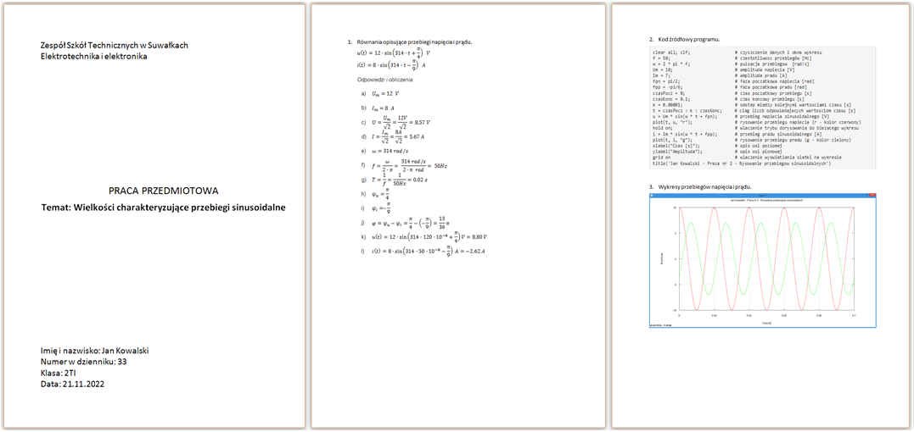

W pliku dane1.pdf znajdują się (dla każdego ucznia osobno) równania opisujące przebiegi napięcia u(t) i prądu i(t) w pewnym odbiorniku, jak w poniższym przykładzie.
u(t) = 12 ⋅ sin(314 ⋅ t + π/4) V i(t) = 8 ⋅ sin(314 ⋅ t - π/9) A
Wyznacz:
Przy użyciu programu Octave wykreśl na wspólnym rysunku przebiegi napięcia i prądu dla zakresu od 0 do 0.1 s.
Wskazówki dotyczące wykonania znajdziesz na stronie: Wykres przebiegu sinusoidalnego.
Praca powinna być wydrukowana na papierze formatu A4 i zawierać:

W pliku dane1.pdf znajdują się (dla każdego ucznia osobno) równania opisujące przebiegi napięcia u(t) i prądu i(t) w pewnym odbiorniku, jak w poniższym przykładzie.
u(t) = 12 ⋅ sin(314 ⋅ t + π/4) V i(t) = 8 ⋅ sin(314 ⋅ t - π/9) A
Wyznacz:
Przy użyciu języka Python wraz z bibliotekami NumPy i Matplotlib wykreśl na wspólnym rysunku przebiegi napięcia i prądu dla zakresu od 0 do 0.1 s.
Praca powinna być wydrukowana na papierze formatu A4 i zawierać:
W pliku dane5.pdf znajdują się wartości: częstotliwości f, elementów R, L dwójnika szeregowego oraz przebieg czasowy występującego na nim napięcia u(t). Wyznacz metodą klasyczną przebieg czasowy prądu dwójnika i(t).
Sposób wykonania:
Przy użyciu programu Octave wykreśl przebiegi napięcia i prądu dla zakresu od 0 do 0.1 s.
Wskazówki dotyczące wykonania dwóch wykresów w jednym oknie graficznym znajdziesz na stronie:
Dwa wykresy w jednym oknie.
W pliku dane.pdf znajdują się wartości: częstotliwości f, elementów R, C dwójnika równoległego oraz przebieg czasowy występującego na nim napięcia u(t). Wyznacz metodą klasyczną przebieg czasowy prądu dwójnika i(t).
Sposób wykonania:
Przy użyciu programu Octave wykreśl przebiegi napięcia i prądu dla zakresu od 0 do 0.1 s.
Wskazówki dotyczące wykonania dwóch wykresów w jednym oknie graficznym znajdziesz na stronie:
Dwa wykresy w jednym oknie.
W trakcie wykonywania zadań pomocne będą wzory do zamiany stopni na radiany (i odwrotnie).
kąt_w_stopniach = kąt_w_radianach * 180 / π kąt_w_radianach = kąt_w_stopniach * π / 180
Praca powinna być wydrukowana na papierze formatu A4 i zawierać:
Wszystkie etapy pracy należy wykonać samodzielnie. Nie należy udostępniać jej innym uczniom. Dostarczenie identycznej lub prawie identycznej pracy będzie skutkowało jej niezaliczeniem.
W pliku dane.pdf znajdują się wartości: częstotliwości f, elementów R, L dwójnika szeregowego oraz przebieg czasowy występującego na nim napięcia u(t). Wyznacz metodą symboliczną przebieg czasowy prądu dwójnika i(t).
Sposób wykonania:
W pliku dane.pdf znajdują się wartości: częstotliwości f, elementów R, C dwójnika równoległego oraz przebieg czasowy występującego na nim napięcia u(t). Wyznacz metodą symboliczną przebieg czasowy prądu dwójnika i(t).
Sposób wykonania:
Praca powinna być wydrukowana na papierze formatu A4 i zawierać:
Wszystkie etapy pracy należy wykonać samodzielnie. Nie należy udostępniać jej innym uczniom. Dostarczenie identycznej lub prawie identycznej pracy będzie skutkowało jej niezaliczeniem.